如何解决魔方 魔方
不要担心，这并不是作弊。事实是在没有帮助的情况下，无法解决的几率是99.9%。
这是最简单的解决方案。您只需要学习6种算法！
向下滚动以了解更多！
- How to solve a Rubik's Cube
- Como resolver un cubo de Rubik
- Como resolver o Cubo Mágico
- Comment résoudre le cube Rubik
- Wie man einen Zauberwürfel löst
- Come risolvere un cubo di Rubik
- A Rubik-kocka kirakása
- Jak ułożyć Kostkę Rubika
- Hoe los je een Rubik's Kubus op
- Hur man löser en Rubik's Kub
- طريقة حل مكعب روبيك
- Как собрать Кубик Рубика
- Rezolvarea cubului Rubik
- रूबिक्स क्यूब कैसे हल करें
- Cách giải mã khối Rubik
- 큐브 맞추는 방법
- ルービックキューブを対処方法
最简单的方法
我们将逐步学习：

发现Rubik魔方
花一些时间玩耍一下您的魔块，尝试了解它。尝试在不阅读本教程的情况下，看一下您能解决到哪一个级别。大多数人在尝试一定次数后可以自己解决一个面。
几件您可能注意到的事情：
固定中间的一面
注意，无论您旋转哪一面，中间的一面总是保持在同一位置。这将确定每一面的颜色。
棱角
除了固定魔方中间的一面，它由8个角块及3个贴纸和12个边缘与2个贴纸组成。
很多案列
这里有很多可行的配置（超过43百万），通过随机翻面直至全部完成的方法解决是不可能的。
战略
在排列新的同时，不打破已经排列好的魔块是不可能的。我们需要将立方体分为多个层，并且使用每个步骤中不会打破排序的算法
Rubik魔方的符号
算法中的字母
我们通过使用每个名字的首个字母标记立方体的六个面。
单独的字母表示顺时针旋转，而逆时针旋转用撇号（例如F'）标记。
- F – Front前面
- R – Right右侧
- U – Up向上
- B – Back返回
- L – Left左侧
- D – Down向下
好消息是我们将在本教程中使用F，R，U和L。
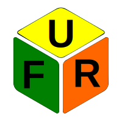
| U | 按顺时针方向打开向上面（90∞）。 |
| F' | 正面逆时针旋转。 |
| R2 | •右面半旋转。 |
单击按钮以查看动画中的动画旋转。
解决白色边缘
我们从解开白色边缘开始。当然您可以从任何其他颜色开始。但在本解决方案指南中，我们将使用白色作为参考。
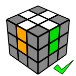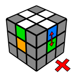
我们已经知道中心块是固定的，并且它们定义每个面部的颜色。这就是为什么我们必须解决白色边缘块，注意中间。
解决白色边缘是直观且相当容易的，因为没有很多您必须注意的已排列组件。在大多数情况下，您只需简单地旋转它至需要到的位置便可。
这里有几个需要一些额外移动的例子。
U'R'UF'
当一面在右点（FU边缘）时，但其方向是错误的，应使用此类短算法。
F'R'D'RF2
当您因为它会定向错误，而不能简单地只是把前沿转到它的正确位置，可以使用这个方法。
R'D'RF2
当它在错误的中间层面时，可以使用这个方法解决白色边缘。
解决白色角落
现在白色边缘已经解决了，我们必须修复白色的角落来完成第一面。

当我们完成这一步时，魔方应该相似这个样子。
这是另一简单步骤，您不应死记硬背这些算法，只需按照您的直觉移动。
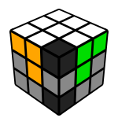
如果您在解决白色角时遇到困难，这里有一个简单的窍门。您只需要记住一个简短的算法，并重复，直至该面完成排列：
R'D'RD
将角放置在它所属地方的下方（前右上角），并重复上述算法，直至白色角进入正确的定向。该算法在标有黑色的点之间来回发送每个面，并总是改变方向。
R' D' R D 技巧总是可行的，但需要太多不必要的步骤，这里有较短的算法：
FDF'
R'D2RDR'D'R
中间层
现在我们已经完成了白色的一面。让我们把立方体倒置，因为我们不再需要查看已经完成的一面。
解决方案非常简单且直观，直至这一点，但大多数人会在这里陷入困境，因为用于解决第二层的算法需要预见太多的步骤。
我们必须学习两个彼此对称的算法。右算法将边缘一侧从前上位置发送至前右位置，而左算法将该侧发送到左前方。
左
U'L'ULUFU'F'
右
URU'R'U'F'UF
当没有侧面插入中间层，您必须执行算法两次才能在第一步中弹出该侧。
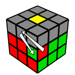
URU'R'U'F'UF - U2 - URU'R'U'F'UF
顶部十字
在第四步中，我们想在立方体的顶部形成一个黄色的十字。如果侧边颜色不符合侧边中心颜色，请不要担心，因为我们将在下一步中将这些侧面发送到它们的最终位置。
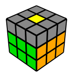»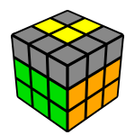»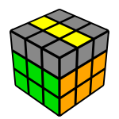»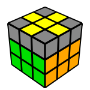
在该步骤中，当所有其它边缘完成时，除了黄色，您可以在您的魔方顶部获取这些模式。使用算法转换到下一个状态，直到到达十字架。
FRUR'U'F'
- 点 – 当所有顶部边缘定向错误时，我们必须应用公式三次，在顶面，只有中心侧是黄色。在第一阶段之后，确保你重新调整手中的立方体，因为“L”形将是颠倒的，
- "L"-字形 – 您距离目标有两个算法的距离确保背面和左边缘是黄色的，如图所示。。
(有一个快捷方式，在一个步骤中从“L”形形状跳到十字形，降低解决方案的时间: F U R U' R' F'). - 行 – 只执行一次算法，您便完成了
- 十字 – 十字是完整的，您可以进入一个新水平！
交换最后一层边
在顶部，我们有十字，但黄色边缘与边颜色不匹配。我们需要把它们放在他们的最终目的地。
为了解决这一问题，我们使用一种算法，交换前上和左上相邻边缘。在某些情况下，两个相对的部分必须交换，这需要在两个步骤中完成。
RUR'URU2R'U
在某些情况下，两个相对的部分必须交换，这需要在两个步骤中完成。
执行一次算法，然后旋转立方体，以确保您在第二轮中更改为正确的部分。
位置在最后一个层角
我们马上就要完成我们的 Rubik魔方了。只剩下黄色的角落，我们将分两个步骤进行。首先，我们必须以定位它们，在下一步骤中定向它们。
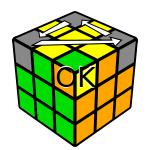
URU'L'UR'U'L
此算法循环上面图像上标有数字的角，及标有“OK”的前右上角将保留在原位。
当您到达这一点，并在解决方案中寻找一个角落，即在正确的地方。如果你可以找到一个，然后重新定位您手中的魔方，那么便会在准确的位置上，并执行公事。在某些情况下，你必须使用它两次。
如果在正确的位置没有黄色的角，然后通过算法来识别它们，然后再看看，因为这一次必须有一个。
一个有趣的事实是，在这个步骤中，右边点的片段数量只能是0,1或4。
定向最后一个角
在最后一步中的每一块应该在其正确位置上，但黄色的角落是错误的。为了完成我们的立方体，我们将使用相同的算法，我们用来解决第一层角：
R'D'RD

首先在突出显示的右前方点，拿着你的手有一个不对准的黄色角落的立方体（见图）。重复R' D' R D算法，直到这一块在它的地方与黄色贴纸。
只将一面向上转动，将另一个错误的黄色拐角移到突出显示的点，并重复R' D' R D算法，直到这个黄色面被解决。
移动其他未对齐的黄色边角，一个一个到标记的点，并做公式，直到所有的黄色角落都被解决。
在移动之间，拼图可能看起来很乱，但不要担心，因为 当所有黄色角落正确定向时，一切都会是固定的。
下面的例子演示时，即当所有角落的方向错误时。它将黄色角逐个移动到前右空间，并执行(R' D' R D) ，直到它们都被固定。
按播放按钮查看动画：
概要
这是帮助您练习的每一个算法。
如何解决您的Rubik魔方
符号
F前 R右 U上 L左
L – 向左顺时针
F' – 前面倒置
1,2. 白色面
十字架，然后拐角。
中层
右： U R U' R' U' F' U F
左： U' L' U L U F U' F'
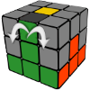
顶十字
F R U R' U' F'
交换顶边
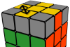
R U R' U R U2 R' U
位置顶角
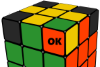
U R U' L' U R' U' L
定向顶角
将未对齐的黄色边角逐个移动到突出显示的位置，旋转顶层并做R' D' R D直到当前面被求解。